From the outside an LLM looks like "text in, text out". This chapter opens the box. The model actually writes one token at a time, and software runs it in a loop, appending each new token to the prompt. One pass through the model goes tokenizer → a stack of Transformer blocks → LM head, which outputs a probability for every token in the vocabulary; a decoding strategy picks one. Every token flows down its own parallel stream, and a KV cache saves the work already done for earlier tokens. Inside each block, attention pulls in context from earlier tokens (score relevance, then combine) and a feedforward network holds most of what the model memorised. The chapter ends with the tweaks that make 2024-era models like Llama faster and better: sparse attention, multi-query and grouped-query attention, Flash Attention, pre-normalisation with RMSNorm, SwiGLU and rotary position embeddings (RoPE).
The chapter zooms in, one layer at a time: first the whole model as a black box, then its three parts, then one Transformer block, then one attention head, then the modern tweaks to each part. Read each row as "here is the thing → here is what's inside it → here is how people made it faster".
Chapter 2 covered tokenization (cutting text into tokens) and embeddings (a vector of numbers for each token). Now the book goes into the language model itself and the main intuitions of how Transformer language models work. The focus is on text generation models (generative LLMs), the kind that write text, not the kind that only represent it.
The chapter mixes concepts and code. The authors' advice: on your first read, skip the code and grasp the concepts; on a second read, use the code to start applying them. The first piece of code loads a model and wraps it in a pipeline for generation:
import torch
from transformers import AutoModelForCausalLM, AutoTokenizer, pipeline
# Load model and tokenizer
tokenizer = AutoTokenizer.from_pretrained("microsoft/Phi-3-mini-4k-instruct")
model = AutoModelForCausalLM.from_pretrained(
"microsoft/Phi-3-mini-4k-instruct",
device_map="cuda",
torch_dtype="auto",
trust_remote_code=True,
)
# Create a pipeline
generator = pipeline(
"text-generation",
model=model,
tokenizer=tokenizer,
return_full_text=False,
max_new_tokens=50,
do_sample=False,
)| Line | What it does and why |
|---|---|
AutoTokenizer.from_pretrained(...) | Downloads the tokenizer that belongs to Phi-3-mini-4k-instruct (Microsoft's small instruction-tuned model with a 4K-token context). The model only understands the token IDs from its own tokenizer. |
AutoModelForCausalLM | Loads the model with a causal language modelling head, i.e. "predict the next token" (the LM head of plate 4). |
device_map="cuda" | Put the model on the GPU. |
torch_dtype="auto" | Use the number format (precision) stored with the model instead of forcing one. |
trust_remote_code=True | Allow running model-specific Python code that ships with the model on the Hugging Face Hub. |
pipeline("text-generation", ...) | Wraps tokenizer + model + the generation loop in one callable, generator(prompt). |
return_full_text=False | Return only the newly generated text, not the prompt plus the text. |
max_new_tokens=50 | Stop after 50 new tokens. (Plate 3 shows the email cut off by this limit.) |
do_sample=False | Don't sample randomly: always take the most likely token (greedy decoding, plate 5). |
Loading the tokenizer and the model is like hiring a cook (model) together with the cook's own measuring cups (tokenizer). The pipeline is the restaurant's order counter: you hand in an order (prompt), the counter handles everything and gives back a plate (text). Where it breaks: a cook can use any cups; a model breaks if you feed it token IDs from a different tokenizer.
"How would you run an open model locally for a quick prototype?" — "Load the tokenizer and the causal-LM model from the Hugging Face Hub with the same model ID, put it on the GPU with an automatic dtype, and wrap both in a text-generation pipeline. I would set max_new_tokens to bound latency and cost, and do_sample=False when I want reproducible outputs for testing."
The chapter has two halves. The first half (An Overview of Transformer Models, plates 2–14) gives a high-level view of the model and then zooms in on its parts. The second half (Recent Improvements to the Transformer Architecture, plates 15–22) shows how later work improved on the Transformer since it was introduced in 2017 (in the paper "Attention is all you need").
Like learning a car: first "you press the pedal and it moves", then engine, gearbox, wheels, then what changed between a 2017 model and a 2024 model (fuel injection, turbo). Where it breaks: a 2024 car engine is very different from 2017; the 2024 Transformer is still mostly the 2017 design with tweaks.
The most common way to picture a Transformer LLM is as a software system that takes in text and generates text in response. Once a large enough text-in-text-out model is trained on a large enough, high-quality dataset, it can generate impressive and useful outputs. Figure 3-1 shows one used to write an email.
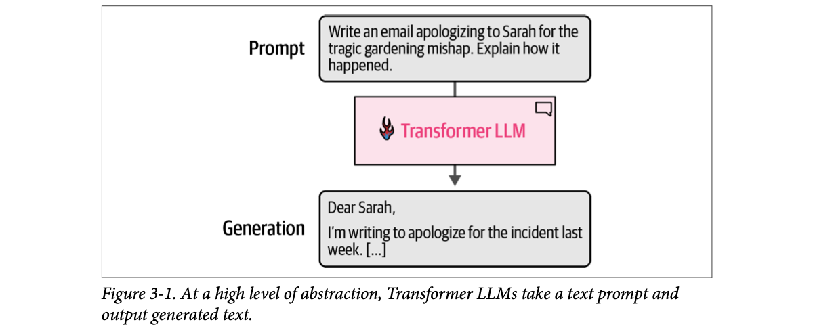
How to read this figure: top grey box = the prompt ("Write an email apologizing to Sarah for the tragic gardening mishap. Explain how it happened."). Pink box = the model, treated as a black box. Bottom grey box = what comes out ("Dear Sarah, I'm writing to apologize for the incident last week. […]"). This is the "outside" view; the rest of the chapter opens the pink box.
But the model does not write the whole text in one go. It generates one token at a time. Each token-generation step is one forward pass through the model. "Forward pass" is machine-learning speak for: the inputs go into the neural network, flow through all the computations it needs, and produce an output at the other end of the computation graph.
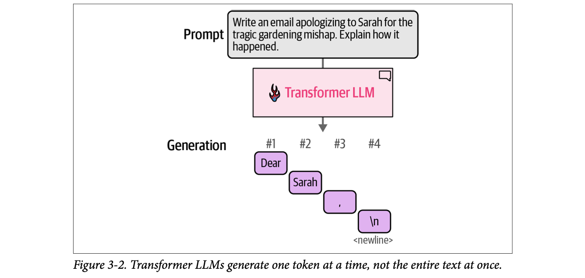
How to read this figure: the purple boxes are four generation steps, numbered #1 to #4, laid out like a staircase to show they happen one after another: "Dear", then "Sarah", then ",", then "\n" (a newline token). Even punctuation and line breaks are separate tokens, each costing a forward pass.
After each step, the input prompt is changed for the next step: the output token is appended to the end of the input prompt, and this longer text goes through the model again.
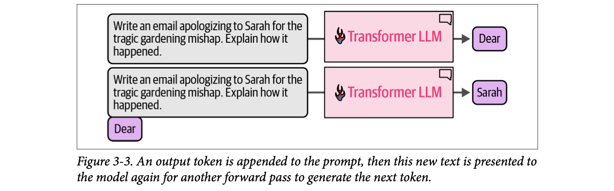
How to read this figure: row 1: prompt → model → "Dear". Row 2: the same prompt with "Dear" stuck underneath → the same model → "Sarah". The model has no memory between rows; the only thing that changes is that its input got one token longer.
So the accurate picture is: the model simply predicts the next token from an input prompt. Software around the neural network runs it in a loop to grow the text one token at a time until it is complete.
Models that consume their own earlier predictions to make later predictions (the first generated token is used to generate the second) are called autoregressive models. That is why text-generation LLMs are called autoregressive. The word is often used to tell them apart from text representation models like BERT, which are not autoregressive (BERT reads the whole text at once and outputs vectors; it doesn't write).
Each click is one forward pass. Watch the input grow by the token the model just produced. (Tokens are shown as words for readability; real tokens can be word pieces.)
This is what happens under the hood when we call the pipeline:
prompt = "Write an email apologizing to Sarah for the tragic gardening mishap. Explain how it happened."
output = generator(prompt)
print(output[0]['generated_text'])which prints:
Solution 1:
Subject: My Sincere Apologies for the Gardening Mishap
Dear Sarah,
I hope this message finds you well. I am writing to express my deepThe model starts the email with a subject line, then stops abruptly mid-sentence ("my deep"). Why? It hit the token limit set by max_new_tokens=50. If we raise that number, it continues until it finishes the email. The "Solution 1:" header is just what this model happened to write first; the loop printed whatever 50 tokens it produced.
Antakshari (the song chain game) played by one person with no memory: someone reads them the whole song so far, they sing one more word, then you read them the whole song again including their word, and they add the next one. Where it breaks: a person would remember the song; the model really gets the whole text again every pass (plate 7 shows how the KV cache avoids redoing the work).
The neural network is a pure function: tokens → probabilities for the next token. Everything that feels like "writing" (the loop, stopping at a limit or an end-of-text token, streaming words to the screen) is ordinary software around that function. That's why generation cost grows with output length: 50 tokens means 50 forward passes.
"Why are LLMs called autoregressive, and what does that mean for latency?" — "A generative LLM predicts only the next token; a loop appends that token to the input and runs the model again, so each output token depends on the previous ones. That makes output generation sequential: latency grows roughly linearly with the number of output tokens, which is why we stream tokens to the user and cap max_new_tokens. In a voice agent, time-to-first-token matters most because TTS (text-to-speech) can start speaking as soon as the first words arrive."
Besides the loop, the two key internal components are the tokenizer and the language modeling head (LM head). Figure 3-4 shows where they sit.
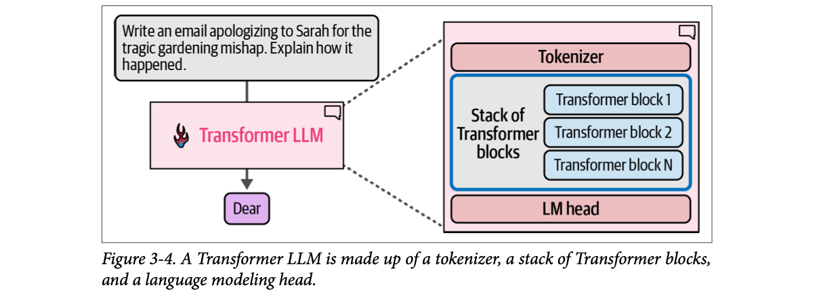
How to read this figure: the dotted lines "open up" the pink model box from Figure 3-1. Read the right panel top to bottom: tokenizer, then blocks 1, 2, … N (blue), then the LM head. The output is still just one token, "Dear".
Recall from Chapter 2 that the tokenizer contains a table of tokens, the tokenizer's vocabulary. The model holds a vector for each token in that vocabulary: the token embeddings. Figure 3-5 shows both for a model with a vocabulary of 50,000 tokens.
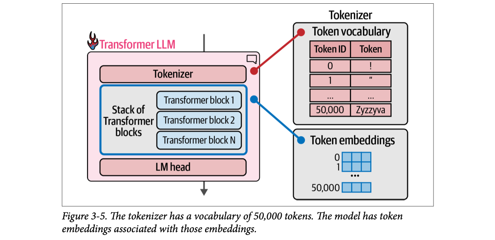
How to read this figure: red line: the tokenizer owns the vocabulary table (Token ID → Token: 0 → "!", 1 → a quote mark, …, 50,000 → "Zyzzyva"; beyond the book: a real word, a genus of weevils, often the last entry in a dictionary). Blue line: the model owns the embeddings matrix, one row of numbers per token ID. So token ID 1,102 picks row 1,102 of the matrix. (The caption's "associated with those embeddings" is the book's wording; it means "associated with those tokens".)
Computation flows in the direction of the arrow, top to bottom. For each generated token, the process flows once through each Transformer block in order, then to the LM head, which outputs the probability distribution for the next token (Figure 3-6).
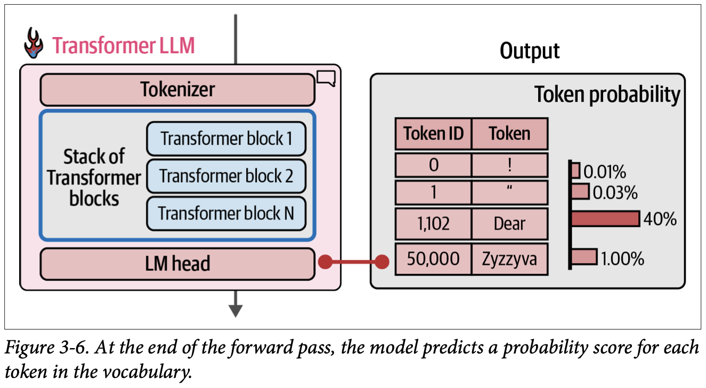
How to read this figure: on the left is the whole Transformer LLM, top to bottom: tokenizer, then the stack of Transformer blocks (1, 2 … N), then the LM head. A red line links the LM head to the "Output" box on the right. That output is the same table as the vocabulary, with one more column: a probability. "!" gets 0.01%, the quote mark 0.03%, "Dear" (ID 1,102) gets 40%, and "Zyzzyva" 1.00%. Every one of the 50,000 tokens gets a score; together they add up to 100%.
The LM head is itself a simple neural network layer. It is one of several possible "heads" you can attach to a stack of Transformer blocks to build different kinds of systems. Other heads include sequence classification heads (one label for the whole text, e.g. sentiment) and token classification heads (one label per token, e.g. marking names of people).
You can see the order of the layers by printing the model variable. For Phi-3-mini:
Phi3ForCausalLM(
(model): Phi3Model(
(embed_tokens): Embedding(32064, 3072, padding_idx=32000)
(embed_dropout): Dropout(p=0.0, inplace=False)
(layers): ModuleList(
(0-31): 32 x Phi3DecoderLayer(
(self_attn): Phi3Attention(
(o_proj): Linear(in_features=3072, out_features=3072, bias=False)
(qkv_proj): Linear(in_features=3072, out_features=9216, bias=False)
(rotary_emb): Phi3RotaryEmbedding()
)
(mlp): Phi3MLP(
(gate_up_proj): Linear(in_features=3072, out_features=16384, bias=False)
(down_proj): Linear(in_features=8192, out_features=3072, bias=False)
(activation_fn): SiLU()
)
(input_layernorm): Phi3RMSNorm()
(resid_attn_dropout): Dropout(p=0.0, inplace=False)
(resid_mlp_dropout): Dropout(p=0.0, inplace=False)
(post_attention_layernorm): Phi3RMSNorm()
)
)
(norm): Phi3RMSNorm()
)
(lm_head): Linear(in_features=3072, out_features=32064, bias=False)
)What the book points out in this structure:
model, followed by lm_head.Phi3Model is the embeddings matrix embed_tokens: 32,064 tokens, each with a vector of size 3,072.Phi3DecoderLayer.mlp; the book expands it as "multilevel perceptron", the usual name is multilayer perceptron). Both are covered later in the chapter.lm_head takes a vector of size 3,072 and outputs a vector as long as the number of tokens the model knows (32,064). That output is the score for each token, used to pick the output token.Pick a module to see what it is and where it shows up in this chapter.
Simple arithmetic on the printout: qkv_proj outputs 9,216 = 3 × 3,072, i.e. queries, keys and values (plate 12) computed in one matrix multiply, each 3,072 wide. gate_up_proj outputs 16,384 = 2 × 8,192: a "gate" half and an "up" half, which is why down_proj takes 8,192 in, not 16,384; that gated pattern with SiLU is the SwiGLU idea of plate 20. padding_idx=32000 is the ID of the padding token. Phi-3-mini's config (not in the book) uses 32 attention heads of size 96 (32 × 96 = 3,072), with no key/value sharing.
An IRCTC booking: the form converts your typed station names into station codes (tokenizer), the back-end runs the request through many checks in order (Transformer blocks), and the final screen ranks every train by how well it fits (LM head scores). Where it breaks: IRCTC shows you the list; the LM head scores all 32,064 tokens every single pass, even "Zyzzyva".
Embedding lookup turns IDs into vectors of size 3,072 (the model dimension). Every block takes vectors of size 3,072 and returns vectors of size 3,072, so blocks can be stacked as deep as you like. The LM head is just a big matrix (3,072 × 32,064) that turns the final vector into one raw score per vocabulary token; a softmax turns raw scores into probabilities.
"Walk me through what happens when an LLM generates a token." — "The tokenizer maps text to IDs; IDs look up embedding vectors; those flow through N identical decoder blocks, each with self-attention and an MLP; the final vector for the last position goes through the LM head, a linear layer to vocabulary size, then softmax gives a distribution, and a decoding strategy picks one token. Swap the LM head for a classification head and the same backbone becomes a classifier."
At the end of processing, the model outputs a probability score for each token in the vocabulary (Figure 3-6). The method for choosing a single token from that distribution is the decoding strategy. Figure 3-7 shows it picking "Dear".
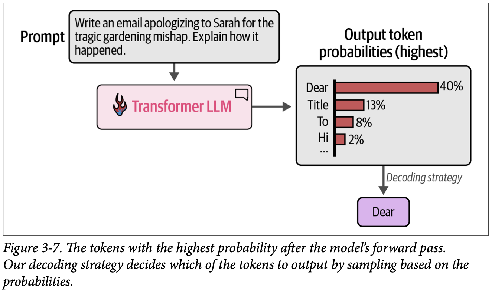
How to read this figure: the prompt (an apology email to Sarah about a gardening mishap) goes into the Transformer LLM. On the right, the bar chart shows only the top few of all tokens: "Dear" 40%, "Title" 13%, "To" 8%, "Hi" 2%, "…" for the long tail. The arrow labelled "Decoding strategy" is the separate step that turns this list into one token. Here it chose "Dear", but it didn't have to.
"Dear" 40%, "Title" 13%, "To" 8%, "Hi" 2% are the book's numbers. The remaining 37% is spread over a modelled long tail ("Subject" 9%, "I" 7%, "Hello" 6%, "My" 5%, all other tokens 10%) so the bars add to 100%.
Beyond the book (temperature is explained in Ch.6): the slider divides the model's raw scores by the temperature before softmax. 1.00 = the distribution as given; lower sharpens it toward "Dear"; 0 = greedy (always "Dear"); higher flattens it.
prompt = "The capital of France is"
# Tokenize the input prompt
input_ids = tokenizer(prompt, return_tensors="pt").input_ids
# Tokenize the input prompt (book's comment; this line moves the IDs to the GPU)
input_ids = input_ids.to("cuda")
# Get the output of the model before the lm_head
model_output = model.model(input_ids)
# Get the output of the lm_head
lm_head_output = model.lm_head(model_output[0])
token_id = lm_head_output[0,-1].argmax(-1)
tokenizer.decode(token_id) # → Parismodel.model(input_ids) runs only the body (embeddings + 32 blocks), stopping before the LM head.model.lm_head(model_output[0]) runs the LM head on it. lm_head_output has shape [1, 6, 32064].lm_head_output[0,-1]: index 0 on the batch dimension (we sent one prompt), index -1 = the last token in the sequence. That gives the list of scores for all 32,064 tokens..argmax(-1) takes the top-scoring token ID (greedy), and tokenizer.decode turns it into text: Paris.Ordering at a chai stall where the owner knows you usually take masala chai (40%), sometimes ginger (13%), sometimes elaichi (8%). Greedy: he always makes masala chai. Sampling: he rolls a weighted dice, so most days masala, some days ginger. Where it breaks: you'd be annoyed by a random drink; for writing, a bit of randomness makes text less repetitive and more natural.
The LM head gives raw scores (logits); softmax turns them into probabilities that sum to 1. Decoding is a separate, tiny step outside the network, so you can change it per request without retraining. Greedy is deterministic: same prompt, same output. Sampling is random: same prompt, different outputs.
"When would you use temperature 0?" — "When I want deterministic, most-likely output: extraction, classification, tool-call arguments, JSON. For open-ended text I sample with a moderate temperature so it doesn't loop or sound flat. Greedy is simply argmax over the LM head's distribution at the last position; sampling draws from it."
[1, 6, 32064] has a "6" in it.One of the most compelling features of Transformers: they suit parallel computing better than earlier neural network architectures for language (beyond the book, an example: RNNs, recurrent neural networks, which read one word after another). You first see this in how each token is processed. The tokenizer splits the text into tokens, and each input token flows through its own computation path (a good first intuition, at least). Figure 3-8 shows these processing tracks, or streams.
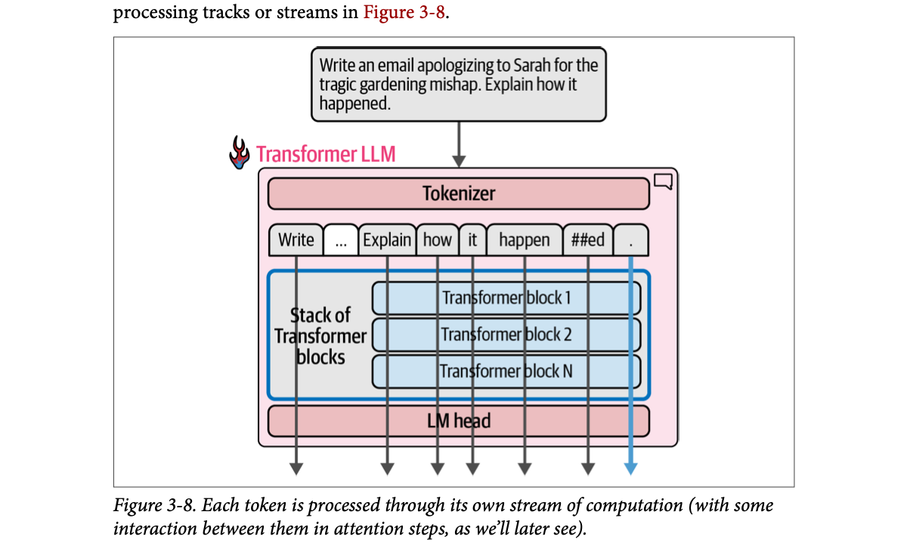
How to read this figure: the tokenizer row shows the tokens (note "happen" + "##ed": "happened" is split into two tokens). Each token gets a vertical arrow running down through every block. The arrows are drawn separately to show they can be computed side by side. The last arrow (".") is blue because it's the one that matters for the next token.
Current Transformer models have a limit on how many tokens they can process at once: the model's context length. A model with a 4K context length can process only 4K tokens and would have only 4K of these streams. (Phi-3-mini-4k-instruct has exactly this.)
Each stream starts with an input vector (the token's embedding vector plus some positional information, covered in plate 21). At the end of the stream, another vector comes out as the result of the model's processing (Figure 3-9).
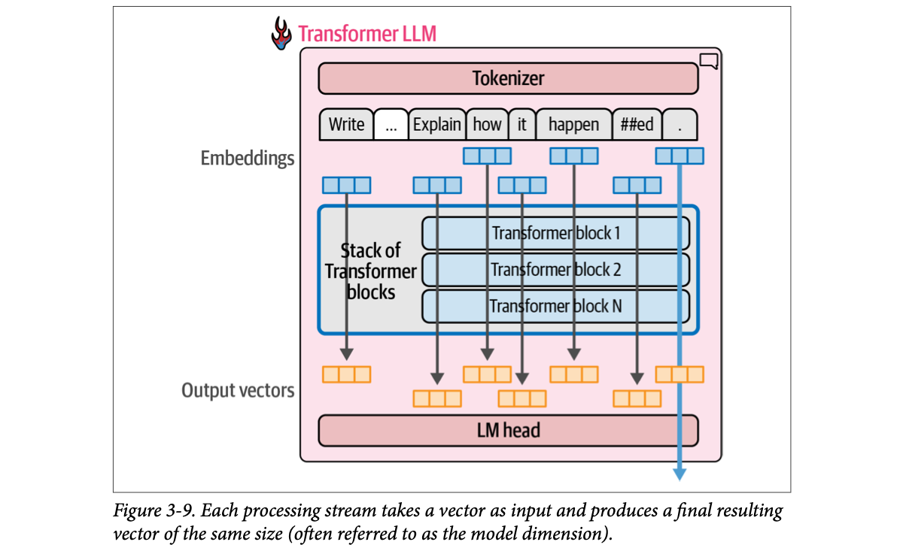
How to read this figure: blue three-cell bars = embeddings going in; orange three-cell bars = output vectors coming out, the same size (the model dimension; 3,072 for Phi-3). Only the far-right stream's arrow continues through the LM head and out of the model. The other orange outputs just stop.
For text generation, only the output of the last stream is used to predict the next token. That vector is the only input into the LM head.
So why compute all the other streams if we throw away their outputs? Because the earlier streams' calculations are needed to compute the final stream. We don't use their final output vectors, but we do use their earlier outputs (inside each Transformer block) in the attention mechanism. The last token needs to "look at" the earlier ones at every layer.
Back to the code: lm_head's output had shape [1, 6, 32064] because its input had shape [1, 6, 3072]: a batch of one input string, with six tokens, each a vector of size 3,072 (the output vectors after the stack of blocks).
model_output[0].shape # torch.Size([1, 6, 3072])
lm_head_output.shape # torch.Size([1, 6, 32064])Model sizes are Phi-3-mini's from the printout (d = 3,072, vocabulary = 32,064, context 4K). Up to 12 streams are drawn.
A row of cricket fielders passing information: every fielder (token) has their own lane and does their own work at the same time, but at each "block" they glance at the fielders before them. Only the last fielder throws the ball to the keeper (LM head). Where it breaks: fielders can see everyone; in a generative model a token can only look at tokens before it.
All tokens of the prompt go through each layer as one matrix [tokens × 3,072], so a GPU does them in one big multiply instead of one by one. That's why reading a long prompt (prefill) is fast per token, while generating is slow: generation produces one new stream at a time.
"What is context length, and why does a 4K-context model fail on a 6K prompt?" — "Context length is the maximum number of token positions the model processes at once, one stream per token. Prompt plus generated tokens must fit. Beyond it you must truncate, summarise, or retrieve only relevant chunks (RAG). In RAG memory systems this is why chunking and top-k retrieval sizes are tuned to the context budget."
When generating the second token, we append the output token to the input and do another forward pass. If the model can cache the results of the previous calculation (especially some specific vectors in the attention mechanism), it no longer needs to repeat the calculations of the previous streams. Now only the last stream needs computing. This optimisation is the keys and values (kv) cache, and it gives a significant speedup of generation. Keys and values are central parts of attention (plate 12).
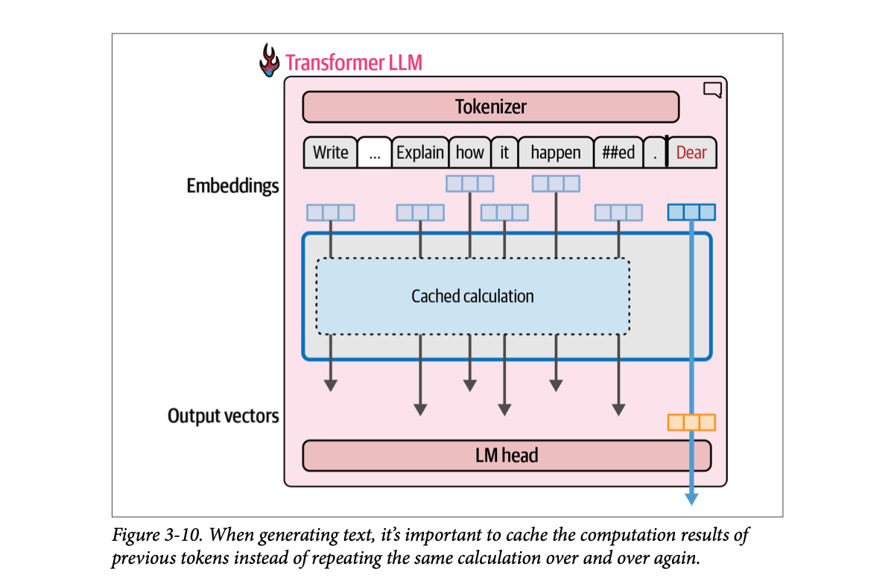
How to read this figure: the newly appended token "Dear" (red text) is the only bright stream. All the earlier tokens' work sits in a dotted box, "Cached calculation", drawn faded. Their arrows still go down (their stored results feed attention) but nothing is recomputed for them.
In Hugging Face Transformers, the cache is on by default. You can turn it off with use_cache=False. To see the difference, ask for a long generation and time it with and without caching:
prompt = "Write a very long email apologizing to Sarah for the tragic gardening mishap. Explain how it happened."
# Tokenize the input prompt
input_ids = tokenizer(prompt, return_tensors="pt").input_ids
input_ids = input_ids.to("cuda")
%%timeit -n 1
# Generate the text
generation_output = model.generate(
input_ids=input_ids,
max_new_tokens=100,
use_cache=True # second run: use_cache=False
)%%timeit is a Jupyter/Colab "magic" command that runs the cell several times and reports the average (-n 1 = one loop per run). Results on a Colab with a T4 GPU, generating 100 tokens:
| Setting | Time for 100 tokens |
|---|---|
use_cache=True | 4.5 s |
use_cache=False | 21.8 s |
4.5 s ÷ 100 tokens ≈ 45 ms per token with the cache; 21.8 s ÷ 100 ≈ 218 ms per token without. At 218 ms/token, a 300-token answer would take over a minute; at 45 ms it takes about 13.5 s, and with streaming the user sees the first words after a fraction of a second. (Division is ours; the two timings are the book's.)
A dramatic difference (about 4.8× here). And even 4 seconds is a long time for a user staring at a screen waiting for output. That's one reason LLM APIs stream output tokens as they are generated instead of waiting for the whole generation to finish.
Each row is one generation step; each cell is one token's stream through the model. Orange = computed this step, teal = reused from the cache.
Modelled: a 4-token prompt, 6 new tokens. Counting stream computations only; real speedups also depend on memory bandwidth.
The cache stores one key vector and one value vector per token, per layer, per key/value head. Memory = 2 × layers × kv_heads × head_dim × bytes × tokens. Defaults below are Phi-3-mini's published config (32 layers, 32 KV heads of 96), not numbers from the book.
A kirana shop's running khata (credit notebook). Without it, every time you buy one more item the shopkeeper re-adds your whole month's purchases from the bills. With the khata he only adds today's item to the running total. Where it breaks: the khata is one number; the KV cache grows with every token, and that memory is what limits how many users a GPU can serve at once.
For earlier tokens, each layer's keys and values never change once computed (a token can't see later tokens, so new tokens don't alter old ones). So they can be stored and reused. Each new step computes the new token's query, key and value, appends its key/value to the cache, and runs attention of one query against all cached keys. Compute per step becomes roughly constant instead of growing with length; memory grows instead.
"What is the KV cache, and what does it cost?" — "During decoding, each layer's key and value vectors for past tokens are stored so each new token only computes its own and attends to the cache; without it you redo the whole prefix every step (the book measures 4.5 s vs 21.8 s for 100 tokens on a T4). The cost is GPU memory that grows with sequence length × batch × layers × KV heads, which is why serving engines like vLLM manage it in pages and why grouped-query attention exists. For a voice agent it also means long conversations get slower and more expensive to keep warm."
The Transformer blocks are where the vast majority of processing happens. A Transformer LLM is a series of Transformer blocks, from about six in the original Transformer paper to over a hundred in many large LLMs. Each block processes its inputs, then passes the results to the next block.
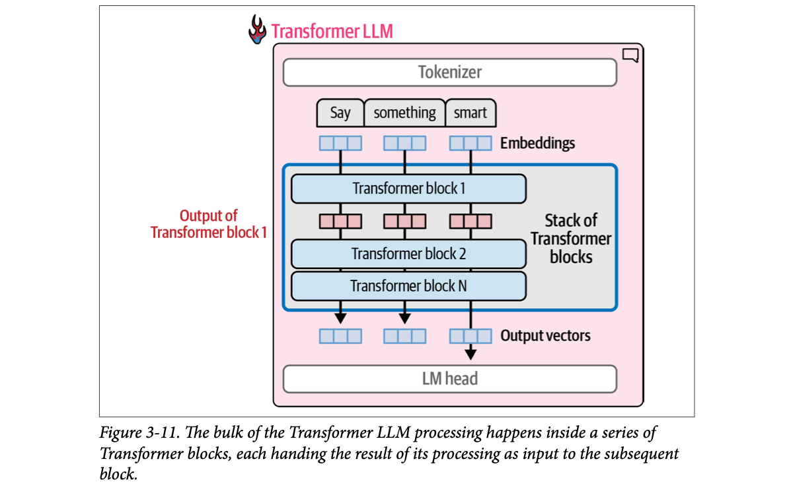
How to read this figure: three tokens ("Say", "something", "smart") → three blue embeddings → block 1 → three red vectors ("Output of Transformer block 1") → block 2 → … → block N → three output vectors. The tokenizer and LM head are faded: the focus is the stack. The number of vectors never changes, only their contents.
A Transformer block (Figure 3-12) is made of two successive components:
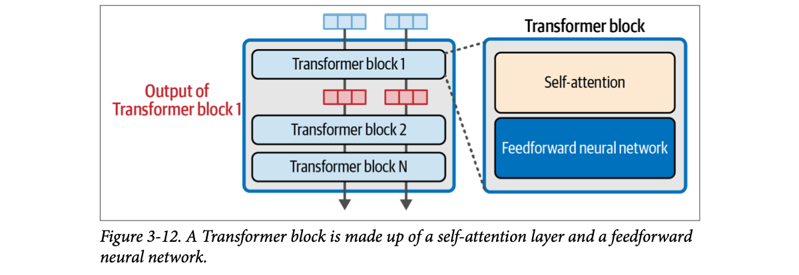
How to read this figure: the dotted lines zoom into block 1. Inside: a beige Self-attention box above a dark blue Feedforward neural network box. Every block in the stack has this same two-part layout (with its own learned weights).
Shown with Phi-3-mini's 32 blocks, collapsed. The "what it might be doing" notes are illustrative intuitions, not the book's claims about specific layers.
A file moving through a government office: at each desk (block) the clerk first reads the other related files on the table (attention), then applies their own rulebook and experience (feedforward), and passes the updated file to the next desk. Where it breaks: clerks differ in role; Transformer blocks all have the same structure and differ only in learned numbers.
Attention is the only place where tokens exchange information; the feedforward network works on each token's vector on its own. Alternating the two, many times, lets the model mix context, then think about it, then mix again with richer vectors.
"What are the two sub-layers of a decoder block, and which has more parameters?" — "Self-attention, which mixes information across positions, and a position-wise feedforward MLP. The MLP usually holds most of the parameters and, per the book, most of the model's memorised knowledge; attention is where the sequence-length cost lives."
An intuition: pass the input "The Shawshank" to a language model. We expect it to generate "Redemption" as the most probable next word (the 1994 film).
The feedforward neural network (collectively, across all the model's layers) is the source of this information (Figure 3-13). When the model was trained on a massive text archive that included many mentions of "The Shawshank Redemption", it learned and stored the information (and behaviours) that make it succeed at this task.
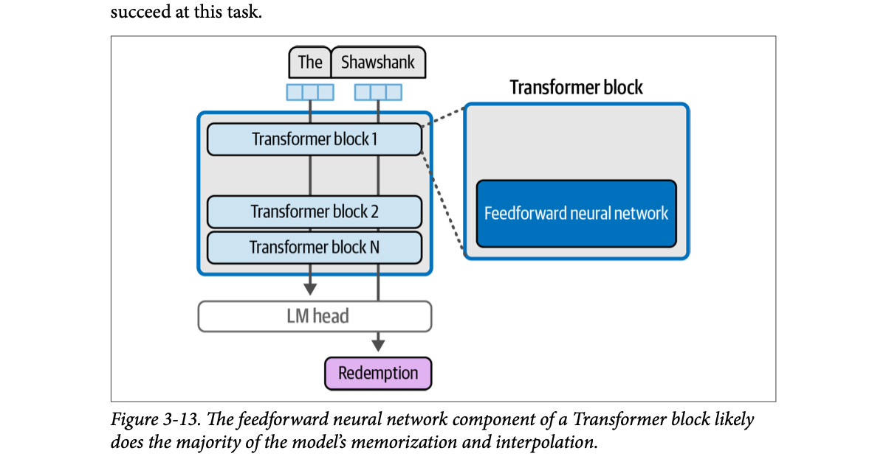
How to read this figure: only the feedforward part of the zoomed block is drawn (attention is left out on purpose). The "Shawshank" stream goes through the LM head and comes out as "Redemption". Note the word "likely" in the caption: this is an intuition about where knowledge lives, not a proven rule.
For an LLM to be trained successfully, it needs to memorise a lot of information. But it is not simply a large database. Memorisation is only one ingredient. The model uses the same machinery to interpolate between data points and more complex patterns so it can generalise: do well on inputs it hadn't seen before and that weren't in its training dataset.
A modern commercial LLM doesn't behave like a "language model" in the strict sense. Pass "The Shawshank" to a chat LLM like GPT-4 and it doesn't just say "Redemption". It writes something like: "The Shawshank Redemption" is a 1994 film directed by Frank Darabont and is based on the novella "Rita Hayworth and Shawshank Redemption" written by Stephen King. …
That's because raw language models (like GPT-3) are hard for people to use well. So the language model is further trained with instruction-tuning and human preference and feedback fine-tuning to match what people expect it to output.
A seasoned Mumbai dabbawala doesn't look up a database to know where a tiffin goes; years of routes are "in his head", and he can also figure out a new building he has never delivered to from the pattern of nearby ones (interpolation). Where it breaks: a dabbawala knows when he doesn't know; an LLM's interpolation can produce a confident wrong answer (a hallucination).
The feedforward network widens each token's vector (for Phi-3, 3,072 → 8,192 after gating), applies a non-linear activation, and shrinks it back (that reading of the printout is beyond the book). Those big weight matrices are where most parameters sit, which is why they are the natural home for stored associations like "Shawshank → Redemption".
"Why does a base model just continue text while ChatGPT answers questions?" — "A base model is trained only to predict the next token, so it continues the pattern. Chat models get extra training: supervised instruction-tuning on prompt/response pairs and preference tuning (RLHF, reinforcement learning from human feedback, or DPO, direct preference optimization) so they follow instructions in a helpful format. Same architecture, different training stages."
Context is vital for modelling language. Simple memorisation and interpolation based only on the previous token can only take us so far. We know this because that was one of the leading ways to build language models before neural networks: n-gram language models (see Chapter 3, "N-gram Language Models", of Speech and Language Processing by Daniel Jurafsky and James H. Martin). An n-gram model predicts the next word from only the last n − 1 words.
Attention is a mechanism that helps the model incorporate context as it processes a specific token. Take the prompt:
"The dog chased the squirrel because it"
To predict what comes after "it", the model needs to know what "it" refers to: the dog or the squirrel? In a trained Transformer LLM, the attention mechanism makes that determination. Attention adds information from the context into the representation of the "it" token (Figure 3-14).
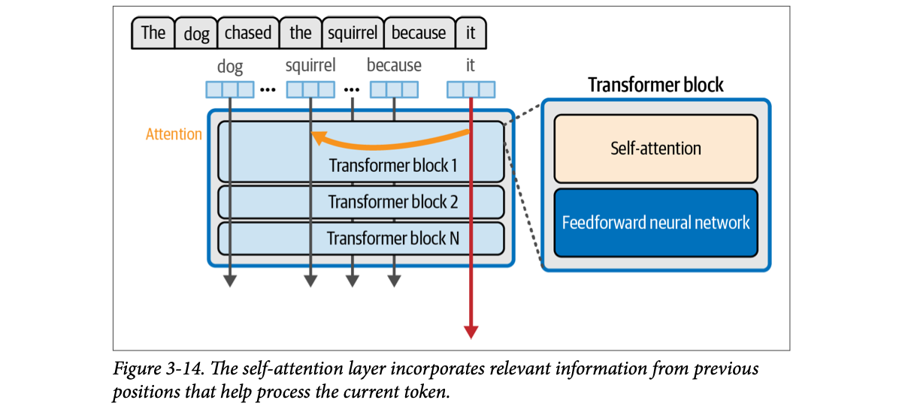
How to read this figure: the red arrow is the "it" stream, being processed now. Inside block 1, an orange curved arrow labelled "Attention" reaches back from "it" to the "squirrel" stream: the model pulls squirrel information into the "it" vector. This is the "interaction between streams" promised in Figure 3-8.
The model does this based on patterns seen and learned from the training data. Earlier sentences may also give clues: for example, if the text had referred to the dog as "she", it becomes clear that "it" refers to the squirrel.
Choose the earlier context. The bars are a modelled attention pattern for the "it" token, to show the idea of shifting weight; real heads learn their own patterns.
In a WhatsApp family group, someone writes "Did he reach?" You scroll up to see who was travelling. That scroll-and-check is attention: the meaning of "he" comes from earlier messages. Where it breaks: you scroll to one message; attention blends information from all earlier tokens at once, with different weights.
An n-gram model's context is a fixed tiny window of previous words. Attention gives every token a learned, content-based way to reach any earlier token in the context window, however far back. That's the key jump from older language models.
"Why did attention beat n-grams and RNNs?" — "N-grams only see a fixed short window; RNNs squeeze all history into one hidden state updated word by word. Attention lets each token directly look at every previous token and weight them by relevance, and it's parallel across tokens, which suits GPUs."
(The heading borrows the title of the 2017 paper that introduced the Transformer.) The most stripped-down version of attention is Figure 3-15. Several token positions go into the attention layer; the final one is the one currently being processed (the pink arrow). Attention operates on the input vector at that position and incorporates relevant information from the context into the vector it produces as the output for that position.
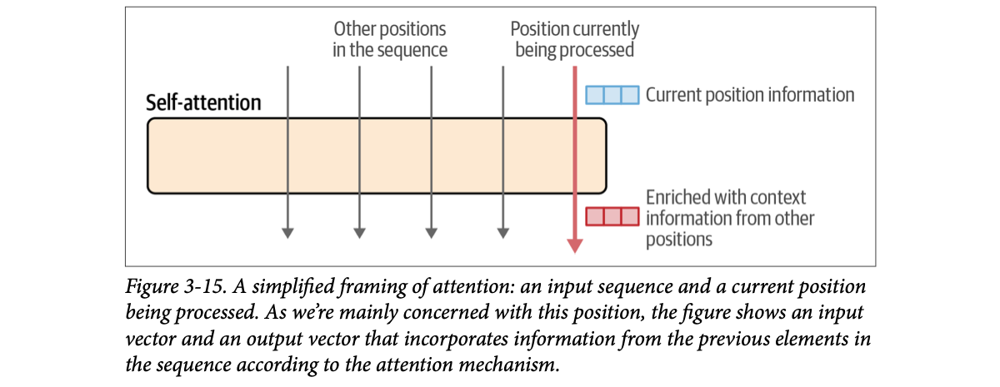
How to read this figure: blue vector at the top right = "current position information" going in. Red vector at the bottom right = the same position coming out, "enriched with context information from other positions". The grey arrows are the other positions, passing through. This colour code (blue in, red out) is used in all the attention figures that follow.
Attention has two main steps:
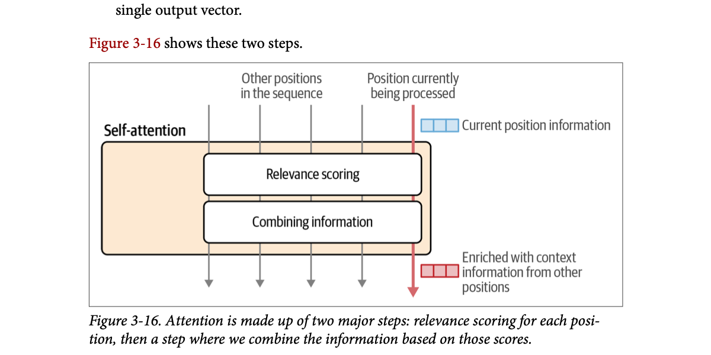
How to read this figure: the same picture as 3-15, with the attention bar opened up into two stacked boxes, run in order: first Relevance scoring, then Combining information. All positions feed both boxes.
To give the Transformer more attention capability, the attention mechanism is duplicated and run several times in parallel. Each parallel copy is an attention head. This increases the model's ability to model complex patterns in the input that require paying attention to different patterns at once. Figure 3-17 shows the intuition: heads run in parallel, with a step before that splits the information and a step after that combines the results of all heads.
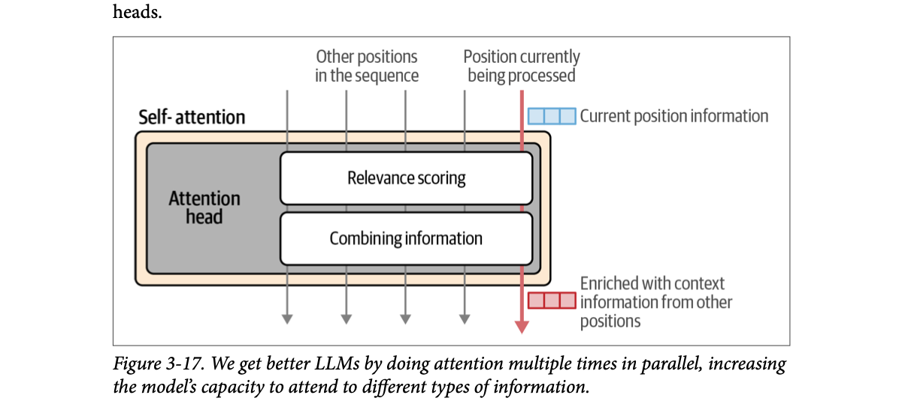
How to read this figure: the two steps now sit inside a dark grey box called Attention head. Picture several of these grey boxes side by side inside the beige self-attention layer; the figure draws one to keep it simple. Figure 3-26 (plate 18) draws three heads with split and combine steps.
Sentence: "The dog chased the squirrel because it". Pick a head. These patterns are modelled examples of the kinds of things heads are often found to track; the book only says heads attend to "different types of information".
Three friends proofread your resume at once: one checks grammar, one checks dates line up, one checks it matches the job ad. Then you merge their notes. That's multi-head attention: same text, different questions, combined result. Where it breaks: you assign the friends their jobs; heads learn their roles on their own during training, and not every head has a neat human-readable job.
One head produces one weighted mix of the context, so it can focus on only one "kind" of relevance at a time. Splitting the vector into several smaller heads lets the layer compute several different mixes in the same cost, then concatenate and project them back to the model dimension.
"Why multi-head attention instead of one big head?" — "Each head computes its own relevance scores, so different heads can track different relationships (previous token, subject of a pronoun, syntax) at the same time. The model dimension is split across heads, so the total compute is about the same as one big head, but the representation is richer."
Now look inside a single attention head. The starting position:
Figure 3-18 shows this starting position. For simplicity, look at only one attention head: the other heads do identical calculations, but with their own projection matrices.
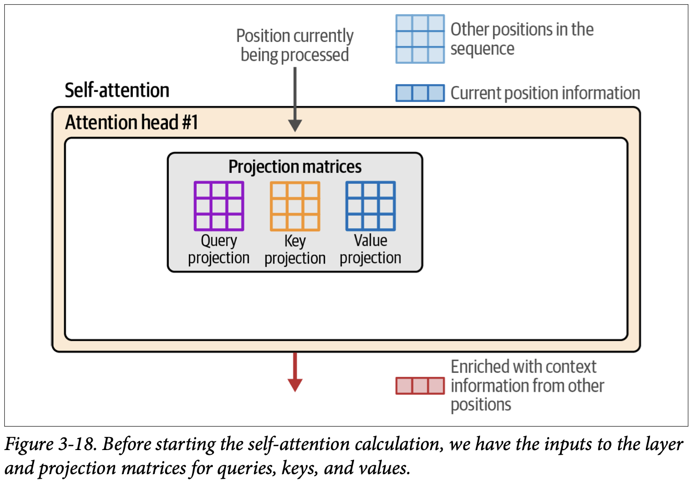
How to read this figure: the legend (top right) shows inputs as a light-blue grid (one row per earlier position) plus a dark-blue row (the current position). An arrow labelled "position currently being processed" enters attention head #1, inside the self-attention layer. Inside the head sit three learned 3×3 grids: purple = query projection, orange = key projection, blue = value projection. A red arrow leaves the bottom: the output will be a vector "enriched with context information from other positions" (pink in the legend). Nothing has been computed yet.
Attention starts by multiplying the inputs by the projection matrices to create three new matrices: the queries, keys and values matrices. They hold the input tokens' information projected into three different spaces that help carry out the two steps of attention: (1) relevance scoring and (2) combining information.
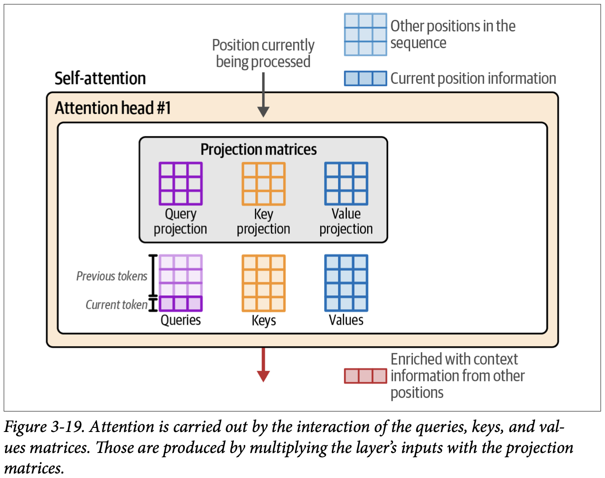
How to read this figure: the new matrices have one row per token. The bottom row of each belongs to the current position; the rows above belong to previous positions (labelled on the queries matrix: "Previous tokens", "Current token"). The earlier query rows are drawn faded: for generating the next token, only the current token's query is used, while all keys and values are used.
Real Phi-3 vectors are 3,072 numbers wide; here they are 3 wide so you can check the arithmetic. The input vector for "it" is 1.00.50.0. Pick which projection to apply:
The same input gives three different vectors because the three matrices are different. Training chooses the matrices so that queries and keys are good for scoring, and values are good for passing information along.
A matrimonial site. Each profile has a key (what you advertise about yourself), a value (what you actually bring to the family), and you also have a query (what you're looking for). Your query is compared with everyone's keys to find matches; then you gather the values of the best matches. Where it breaks: on the site you pick one match; attention takes a weighted blend of all of them.
Why three projections instead of using the raw vectors? Because "what I am looking for", "what I can be found by", and "what I hand over if chosen" are different jobs. Separate learned matrices let one token, say "cat", be easy to find for pronouns (its key) while passing along a different set of features (its value). In Phi-3 these three are computed together by qkv_proj (3,072 → 9,216).
"Explain Q, K and V." — "Each token's input vector is multiplied by three learned matrices. The query is what the current token is looking for, keys are what each token offers to be matched on, and values are the content passed along. Score = query · key for each previous token, softmax, then a weighted sum of values. During generation we cache K and V for past tokens, because only the new token's query is new."
In a generative Transformer, we generate one token at a time, which means we process one position at a time. So the attention mechanism here is only concerned with this one position, and how information from other positions can be pulled in to inform it.
Relevance scoring is done by multiplying the query vector of the current position with the keys matrix. This gives a score for how relevant each previous token is. Passing these through a softmax operation normalises the scores so they sum to 1.
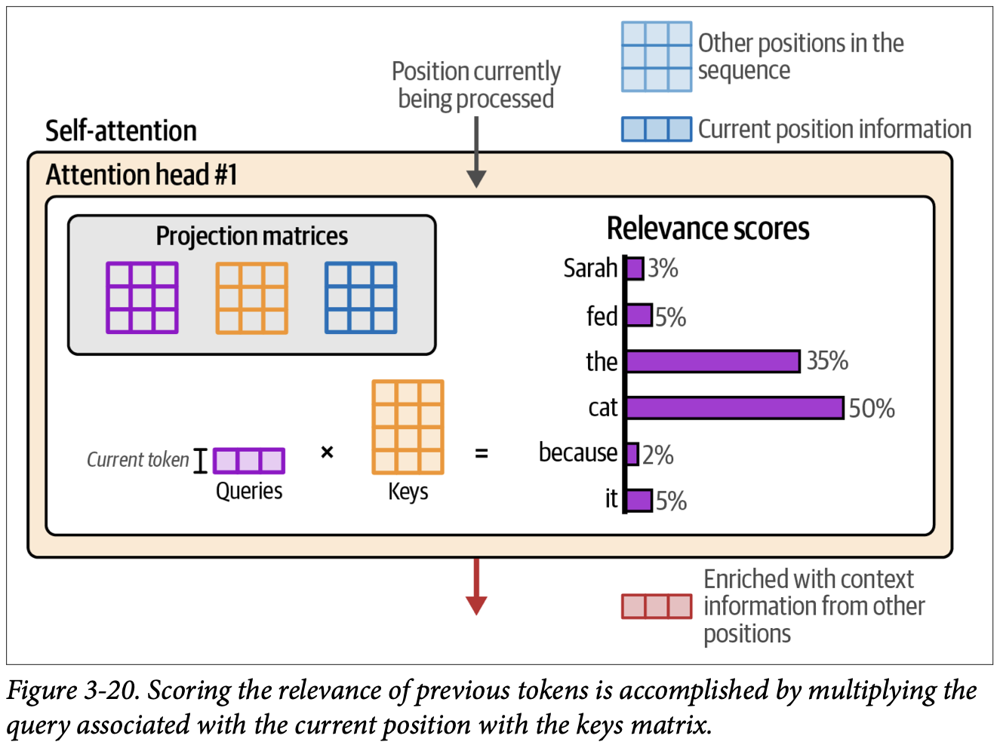
How to read this figure: one purple row (the current token's query) × the orange keys matrix (one row per token) = one score per token. The bar chart shows the result after softmax for "Sarah fed the cat because it": Sarah 3%, fed 5%, the 35%, cat 50%, because 2%, it 5% (total 100%). "cat" wins, so "it" will mostly absorb cat information. "it" also scores itself: a token can attend to its own position.
Modelled 2-number keys for each token. Drag the query sliders to change what the current token ("it") is "looking for". The raw score is the dot product q · k; softmax turns raw scores into percentages.
The keys are invented so that the default query roughly matches the book's pattern ("cat" highest, then "the"). Beyond the book: the original Transformer divides scores by √d (d = vector size) before softmax so that large vectors don't make softmax too peaky; tick the box to see the scores soften.
A Swiggy search for "something spicy and quick": the app compares your query with every restaurant's tags (keys), gives each a match score, then turns the scores into shares of your attention that add up to 100%. Where it breaks: the app shows you a ranked list; attention keeps all scores and uses them as blending weights in step 2.
The dot product of two vectors is large when they point the same way, so q · k measures "does this token have what I'm looking for?". Softmax exponentiates and normalises: big scores get much bigger shares, negative ones shrink toward 0, and the result is a probability-like distribution. In a generative (decoder) model, only previous positions and the current one get scores; future positions are masked out (plate 16).
"What is the complexity of attention and where does it come from?" — "Scoring compares every query with every key, so for a sequence of n tokens it's O(n²) scores per head per layer. During generation with a KV cache it's O(n) per new token. That quadratic cost is why long contexts are expensive and why sparse attention and FlashAttention exist."
With the relevance scores in hand, multiply the value vector of each token by that token's score. Summing the resulting vectors gives the output of this attention step (Figure 3-21).
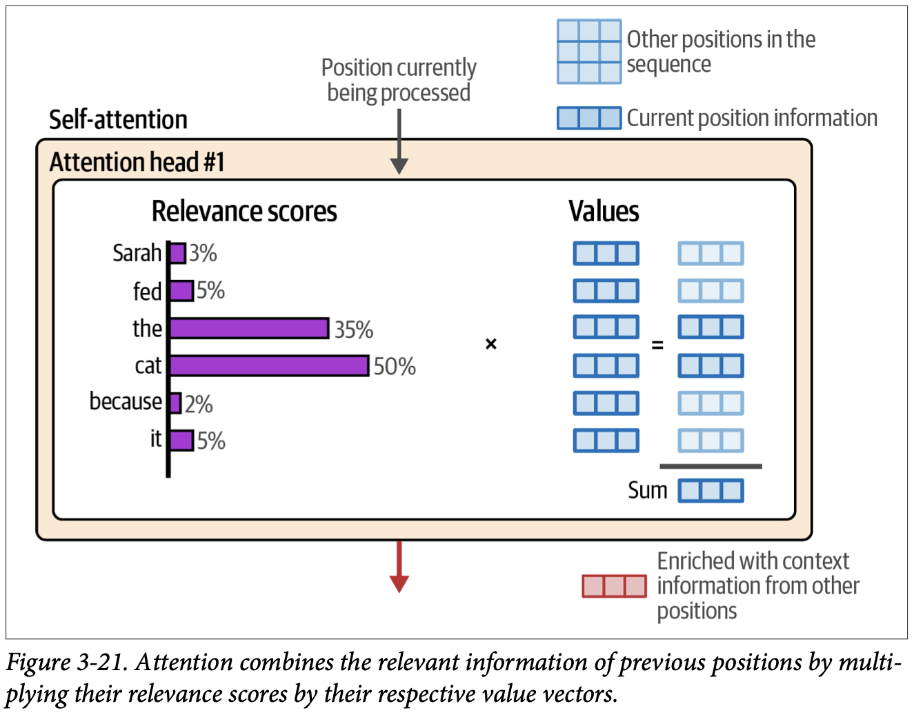
How to read this figure: left = the scores from step 1. Middle = the value vector of each token (all equally dark). Right = each value multiplied by its score: "the" (35%) and "cat" (50%) stay dark; the others turn pale because they're multiplied by small numbers. The line and "Sum" at the bottom add the six weighted vectors into one: the output for the "it" position, mostly made of cat and "the" information.
Value vectors are modelled (3 numbers each); the scores are the book's. Click a token to zero its score and renormalise, to see how much it was contributing.
Making a masala blend: 50% from the cat jar, 35% from the "the" jar, a pinch from the others. The output is one powder that tastes mostly of the big shares. Where it breaks: spices mix physically; here each "jar" is a vector of thousands of numbers, and the blend is done position by position on every number.
The output is a weighted average of value vectors. Because the weights sum to 1, the output stays on a similar scale as the inputs. In each head the result is a smaller vector; the heads' outputs are concatenated and passed through an output projection (o_proj in Phi-3, 3,072 → 3,072) to get back to the model dimension, and then added to the token's stream.
"Write the attention formula." — "softmax(Q·Kᵀ / √d)·V (the √d scaling comes from the original paper; this chapter does not mention it). The softmax part is the relevance score matrix; multiplying by V takes weighted sums of value vectors. For one generating token, Q is a single row, so it's one score per past token and one weighted sum."
Since the Transformer was released, a lot of work has gone into improving it and creating better models. This covers:
At the time of writing, many ideas of the original Transformer are unchanged. A few architectural ideas have proved valuable and contribute to the performance of recent models like Llama 2. The rest of the chapter goes over these developments:
| Area | Tweak | What it buys | Plate |
|---|---|---|---|
| Attention | Local / sparse attention | less compute on long sequences | 16 |
| Attention | Multi-query, grouped-query | smaller K/V matrices, faster inference | 17–18 |
| Attention | Flash Attention | faster training and inference on GPUs, same result | 19 |
| Block | Pre-normalisation, RMSNorm, SwiGLU | less training time, simpler/faster norm, better activation | 20 |
| Positions | Rotary embeddings (RoPE) | absolute + relative position, works with packing | 21 |
The Indian Railways coach design has stayed recognisable for decades, but the newer LHB coaches changed the bogies, brakes and couplers: same idea of a train, better parts. Where it breaks: coaches are swapped over years; a new LLM is trained from scratch with the new parts already built in.
"Is the Transformer in Llama the same as the 2017 one?" — "Mostly yes: the same decoder blocks of attention plus MLP with residuals. The gains came from more and better data, better training recipes, and a handful of architecture tweaks: grouped-query attention, FlashAttention kernels, pre-norm with RMSNorm, SwiGLU and rotary position embeddings."
The part of the Transformer that gets the most research focus is the attention layer, because the attention calculation is the most computationally expensive part of the process.
As Transformers grew larger, ideas like sparse attention ("Generating long sequences with sparse transformers") and sliding window attention ("Longformer: The long-document transformer") made the attention calculation more efficient. Sparse attention limits the context of previous tokens the model can attend to (Figure 3-22).
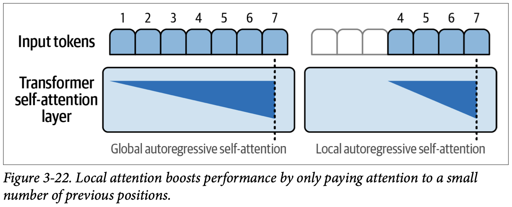
How to read this figure: seven input tokens. Left (global): when processing token 7 (dotted line), the dark triangle stretches back over all seven tokens. Right (local): tokens 1–3 are blank and the triangle covers only 4–7. "Autoregressive" in both labels means only earlier tokens are visible, never later ones.
One model with such a mechanism is GPT-3. But it doesn't use it for all blocks: generation quality would degrade badly if the model could only see a few previous tokens. GPT-3 interweaves full-attention and efficient-attention blocks, so blocks alternate between full attention (e.g. blocks 1 and 3) and sparse attention (e.g. blocks 2 and 4).
Figure 3-23 shows how different attention mechanisms work: which previous tokens (light blue) can be attended to while processing the current token (dark blue).
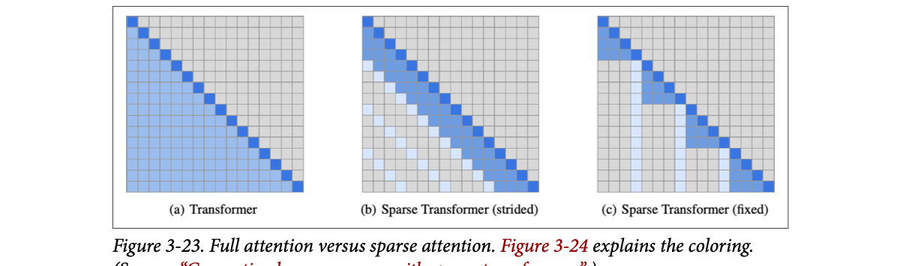
How to read this figure: each row is a token being processed (dark blue cell on the diagonal); light-blue cells in that row are tokens it may attend to; grey cells are off limits. (a) Full: the whole lower triangle, every earlier token. (b) Strided: a band of the last few tokens plus a lighter diagonal stripe every few positions back. (c) Fixed: tokens attend within their own block (the triangles), plus a few fixed "summary" columns that everyone can see. (b) and (c) have far fewer coloured cells, so far less work.
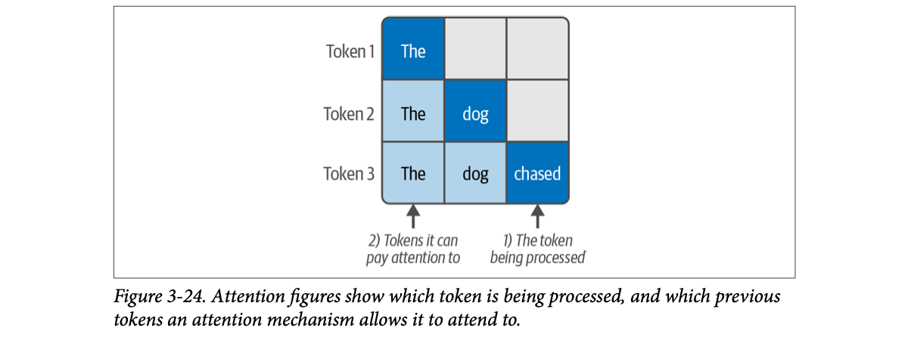
How to read this figure: a tiny full-attention grid for "The dog chased". Row = token 1, 2, 3. (1) Dark cell = the token being processed. (2) Light cells to its left = the tokens it can pay attention to. Grey cells to its right = future tokens, hidden. So "chased" sees "The" and "dog"; "The" sees only itself.
This also shows the autoregressive nature of decoder Transformer blocks (which make up most text generation models): they can only pay attention to previous tokens. Contrast with BERT, which can attend to both sides; hence the "B" in BERT stands for bidirectional.
Hover or tap a row to highlight it. Strided and fixed patterns follow the shapes in Figure 3-23 with the chosen size; exact details in the paper differ.
Reading a long cricket commentary: full attention re-reads every ball since the first over before each comment; local attention only looks at the last few overs; strided also glances at the score at the end of every 5th over. GPT-3's mix is like a commentator who, every other ball, checks the whole scorecard. Where it breaks: a commentator chooses; the pattern is fixed by the architecture.
Full causal attention for n tokens computes about n²/2 scores. A local window of w computes about n·w. When n = 4,096 and w = 512, that's about 8× fewer. The price is that information from far back must travel indirectly, through other tokens or through the full-attention layers. That's why GPT-3 alternates them.
"How do models handle long context efficiently?" — "One family of tricks restricts who attends to whom: sliding-window (local) attention like Longformer, or sparse strided/fixed patterns like the Sparse Transformer. GPT-3 alternated full and sparse blocks to keep quality. Another family keeps full attention but makes it cheaper on hardware (FlashAttention) or shrinks the KV cache (GQA)."
A more recent efficiency tweak is grouped-query attention (GQA; paper: "GQA: Training generalized multi-query transformer models from multi-head checkpoints"), used by models like Llama 2 and 3. Figure 3-25 shows the different types.
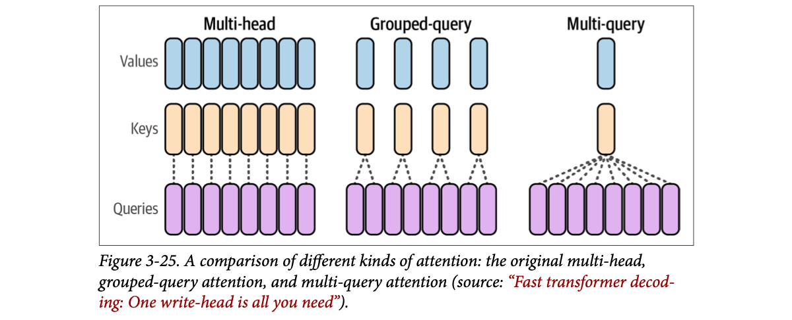
How to read this figure: each pill is one head's matrix: purple = queries, orange = keys, blue = values; dotted lines = which query uses which key/value. Multi-head: 8 queries, 8 keys, 8 values, one-to-one. Grouped-query: still 8 queries, but only 4 keys and 4 values; each pair of queries shares. Multi-query: 8 queries share a single key and value.
Grouped-query attention builds on multi-query attention (MQA; "Fast transformer decoding: One write-head is all you need"). Both improve the inference scalability of larger models by reducing the size of the matrices involved.
An exam hall. Multi-head: every student has their own textbook (key/value). Multi-query: the whole hall shares one textbook. Grouped-query: one textbook per bench of two. Each student still asks their own questions (queries). Where it breaks: sharing a book slows students down; sharing K/V actually speeds the model up, because loading less memory is what decoding is bottlenecked on.
"Why does Llama use grouped-query attention?" — "To make inference scale: fewer key/value matrices means a smaller KV cache and less memory to read per generated token, while keeping more quality than sharing a single K/V (multi-query)."
Earlier (plate 11) we saw how the Transformer paper described multi-headed attention. (The Illustrated Transformer, Jay Alammar's blog post, discusses in detail how the queries, keys and values matrices are used.) Figure 3-26 shows that each attention head has its own distinct query, key and value matrices for a given input.
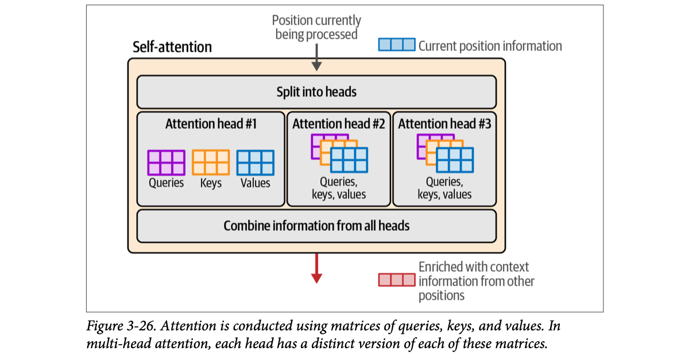
How to read this figure: top bar: Split into heads. Three boxes: head #1 drawn with its queries (purple), keys (orange), values (blue); heads #2 and #3 each have their own stacked set. Bottom bar: Combine information from all heads. Count the orange/blue matrices: three of each.
Multi-query attention optimises this by sharing the keys and values matrices between all the heads. The only matrices unique to each head are the queries (Figure 3-27).
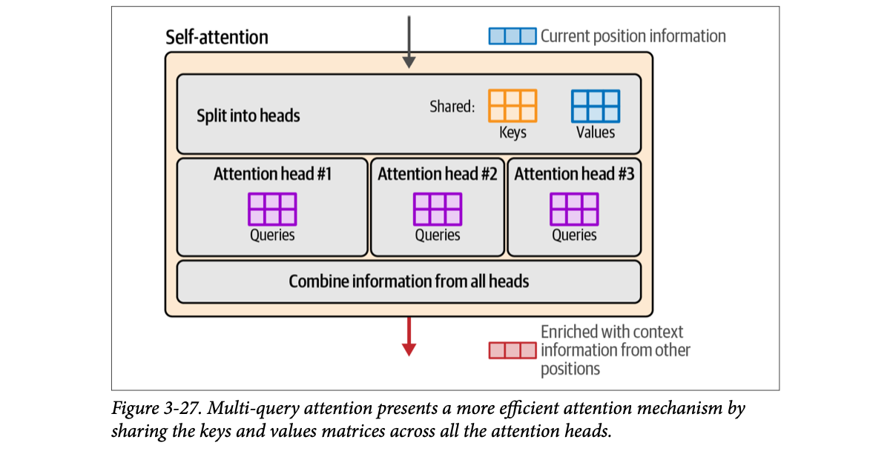
How to read this figure: the keys and values have moved up into the split bar, labelled "Shared:", one of each. The three heads now hold only queries. Matrices to store: 3 queries + 1 key + 1 value.
As models grow, though, this optimisation can be too punishing; we can afford a little more memory to improve model quality. That's where grouped-query attention comes in. Instead of cutting keys and values down to one of each, it allows more (but fewer than the number of heads). Figure 3-28 shows the groups: each group of attention heads shares keys and values matrices.
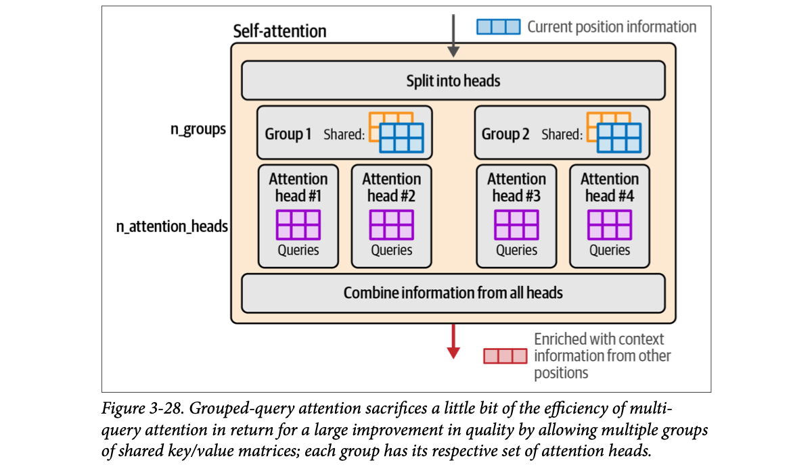
How to read this figure: two settings label the rows: n_groups (here 2) and n_attention_heads (here 4). Group 1's shared keys/values serve heads #1–#2; group 2's serve heads #3–#4. Each head still has its own queries. With n_groups = 1 this becomes multi-query; with n_groups = n_attention_heads it's back to multi-head.
Beyond the book, modelled: cache = 2 × 32 layers × groups × 128 head dim × 2 bytes × 8,192 tokens. With 32 query heads and 8 groups this matches Llama 3 8B's published layout (32 query heads, 8 KV heads), not a number from this chapter.
A housing society's water tanks. Multi-head: every flat has its own tank (lots of space). Multi-query: one tank for the whole building (cheap, but pressure suffers for top floors). Grouped-query: one tank per wing (a little more space, most of the benefit, good pressure). Where it breaks: water is the same in every tank; each K/V group learns different keys and values, which is where the quality comes back.
During generation, each new token must read the whole KV cache from GPU memory for every layer. That memory traffic, not the arithmetic, is usually the bottleneck. Fewer K/V heads means a smaller cache to read and store, so more users or longer contexts fit on one GPU. Queries are not cached (only the new token's query is used), so keeping many query heads costs little.
"MHA vs MQA vs GQA?" — "Multi-head gives every head its own K and V; multi-query shares one K/V across all heads, shrinking the KV cache by the number of heads but costing quality; grouped-query is the middle ground, one K/V per group of heads. Llama 2 and 3 use GQA. If I'm sizing GPUs for a serving gateway, the KV-head count directly sets cache memory per token and therefore max batch size."
Flash Attention is a popular method and implementation that gives significant speedups for both training and inference of Transformer LLMs on GPUs. It speeds up attention by optimising which values are loaded and moved between a GPU's shared memory (SRAM) and high bandwidth memory (HBM). Details are in the papers "FlashAttention: Fast and memory-efficient exact attention with IO-awareness" and the follow-up "FlashAttention-2: Faster attention with better parallelism and work partitioning".
| GPU memory | Size | Speed | Role in Flash Attention |
|---|---|---|---|
| SRAM (on-chip shared memory) | tiny (MBs in total) | very fast | holds small tiles of Q, K, V while computing |
| HBM (high bandwidth memory, the "GPU RAM") | large (tens of GBs) | much slower than SRAM | holds the full matrices; read/written as few times as possible |
Beyond the book: sizes and speeds are rough orders of magnitude for modern data-centre GPUs.
Beyond the book: a simplified view of the papers' idea (tiling and avoiding writing the full score matrix to HBM).
Cooking in a tiny kitchen (SRAM) with a big storeroom down the corridor (HBM). The naive cook carries every ingredient back to the storeroom after each step. The Flash cook brings one tray at a time, finishes everything that tray needs, and only walks back with the finished dish. Where it breaks: cooking order can change the dish; Flash Attention is exact, giving the same numbers as normal attention.
Attention's n × n score matrix is big, and writing it to HBM and reading it back dominates time. Flash Attention processes Q, K, V in blocks that fit in SRAM and keeps running softmax totals, so the full score matrix never hits HBM. Less memory traffic, the same result. That's why the papers call it "IO-aware".
"Does FlashAttention approximate attention?" — "No, it's exact. It restructures the computation to be IO-aware: tile Q/K/V into SRAM, compute softmax incrementally, and avoid materialising the n² score matrix in HBM. It speeds up training and inference and lowers memory, and it's the default in most serving stacks."
The two major components of a block are an attention layer and a feedforward network. A more detailed view also shows the residual connections and layer-normalisation operations (Figure 3-29).
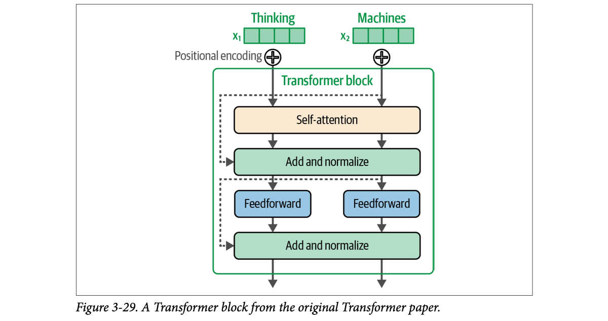
How to read this figure: two tokens, "Thinking" (x₁) and "Machines" (x₂). A ⊕ adds positional encoding to each before the block. Then: self-attention → Add and normalize → a feedforward for each token (drawn twice: it works on each position separately) → Add and normalize. The dotted lines are residual connections: each part's input skips around it and is added back to its output ("Add"); then the sum is normalised.
The latest Transformer models at the time of writing still have the major components, but with several tweaks (Figure 3-30):
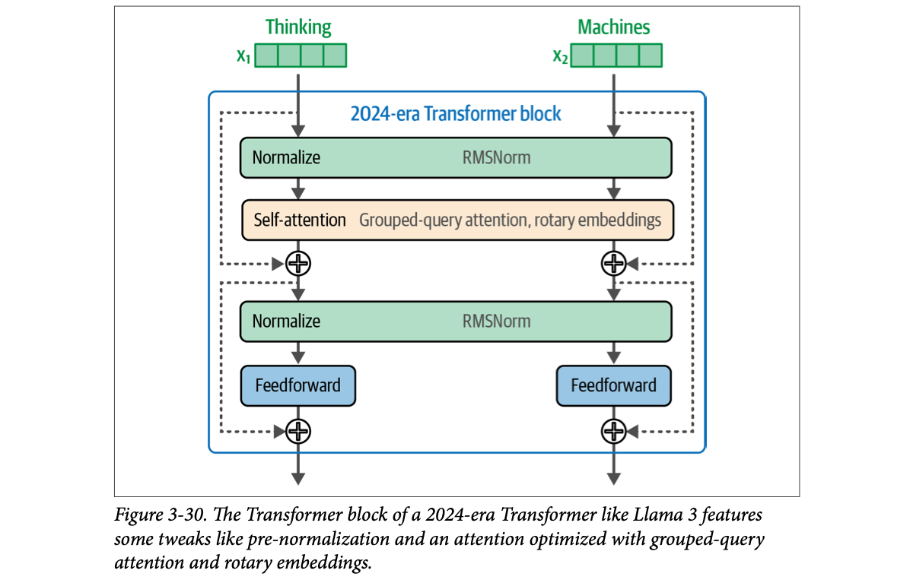
How to read this figure: compare with 3-29. Normalize (RMSNorm) now comes first, before self-attention and again before the feedforward. Self-attention is labelled "grouped-query attention, rotary embeddings". The ⊕ residual adds now sit after each part, with no normalisation right after. And there is no positional encoding ⊕ at the input: position is handled inside attention by RoPE (plate 21).
Formulas from the cited papers, without the learned scale/shift. LayerNorm subtracts the mean and divides by the standard deviation; RMSNorm skips the mean and divides by the root mean square, one less pass over the numbers.
A residual connection is the original photocopy stapled to every edited draft: each desk adds its notes on top, but the original is never lost. Pre-norm is cleaning your spectacles before reading each draft instead of after. Where it breaks: a stapled original stays separate; a residual literally adds the numbers together.
Residuals give each token a "stream" (plate 6) that every block writes into by addition, which keeps gradients flowing through 32–100+ blocks during training. Normalising the input to each sub-layer (pre-norm) keeps values in a stable range so training needs less careful tuning. RMSNorm saves the mean computation. SwiGLU multiplies two projections (one through a SiLU "gate"), which in Phi-3's printout is gate_up_proj + SiLU + down_proj.
"What changed in the Transformer block between the original paper and Llama?" — "Pre-normalisation instead of post-norm, RMSNorm instead of LayerNorm, SwiGLU instead of ReLU in the MLP, grouped-query attention instead of full multi-head, and rotary position embeddings applied to Q and K inside attention instead of absolute positional encodings added at the input. The core attention + MLP + residual design is unchanged."
input_layernorm, post_attention_layernorm (both RMSNorm) and SiLU in Phi-3.Positional embeddings have been a key component since the original Transformer. They let the model keep track of the order of tokens/words in a sequence or sentence, an indispensable source of information in language. (Attention by itself sees a set of vectors; without position, "dog bites man" and "man bites dog" would look alike.) Among the many schemes proposed, rotary positional embeddings ("RoPE", introduced in "RoFormer: Enhanced Transformer with rotary position embedding") are especially important.
The original Transformer and some early variants used absolute positional embeddings: in essence, mark the first token as position 1, the second as position 2, and so on. These could be:
Some challenges arise with these methods when models scale up. For example, when efficiently training models with a large context, many training documents are much shorter than the context. It would be wasteful to give the whole, say, 4K context to a short 10-word sentence. So during training, documents are packed together into each context in the training batch (Figure 3-31).
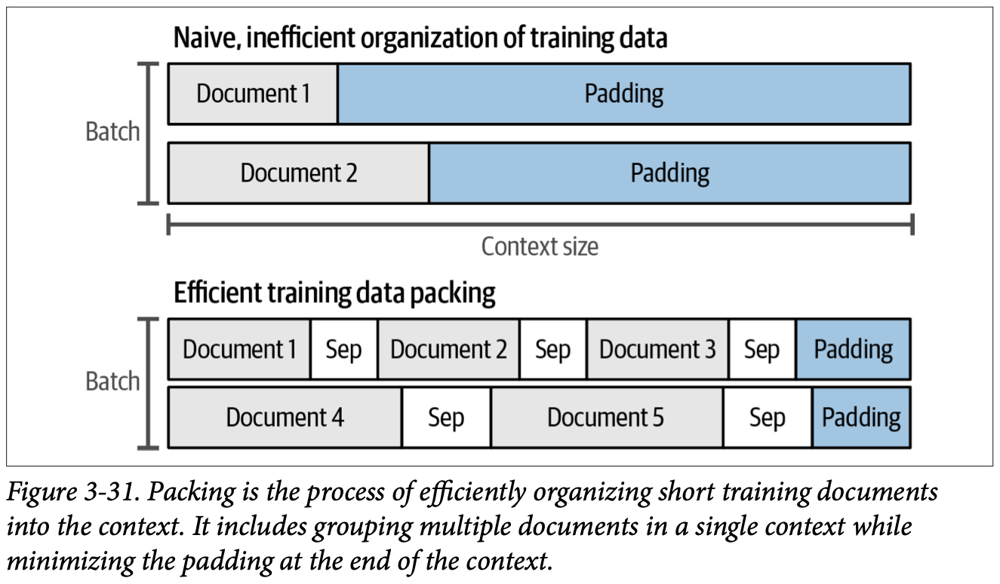
How to read this figure: each bar is one context-size row in a training batch. Top, naive: one document per row, the rest is blue padding (wasted compute). Bottom, packed: documents 1, 2, 3 share one row, separated by Sep (separator) tokens; documents 4 and 5 share another; only a little padding is left at the end.
To learn more about packing: "Efficient sequence packing without cross-contamination: Accelerating large language models without impacting performance", and the visuals in "Introducing packed BERT for 2X training speed-up in natural language processing".
Modelled document lengths (40–700 tokens), packed in order (next-fit: start a new row when the next document does not fit); one Sep token after each document.
Positional methods must adapt to this and other practical issues. If, for example, Document 50 starts at position 50, we'd be misinforming the model by telling it that its first token is number 50. That would hurt performance: the model would assume there is earlier context, while in reality the earlier tokens belong to a different, unrelated document it should ignore.
Instead of static, absolute embeddings added at the start of the forward pass, rotary embeddings encode positional information in a way that captures both absolute and relative token position. The idea is based on rotating vectors in their embedding space. In the forward pass, they are added in the attention step (Figure 3-32).
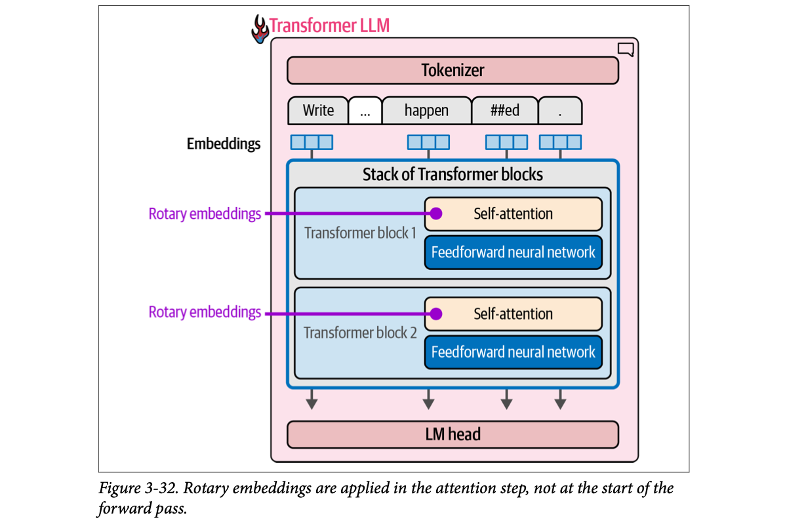
How to read this figure: embeddings go straight from the tokenizer into the stack, with no position added. The purple "Rotary embeddings" lines plug into the self-attention of every block (block 1 and block 2 shown), not the feedforward network and not the input.
During attention, positional information is mixed in specifically into the queries and keys matrices, just before we multiply them for relevance scoring (Figure 3-33).
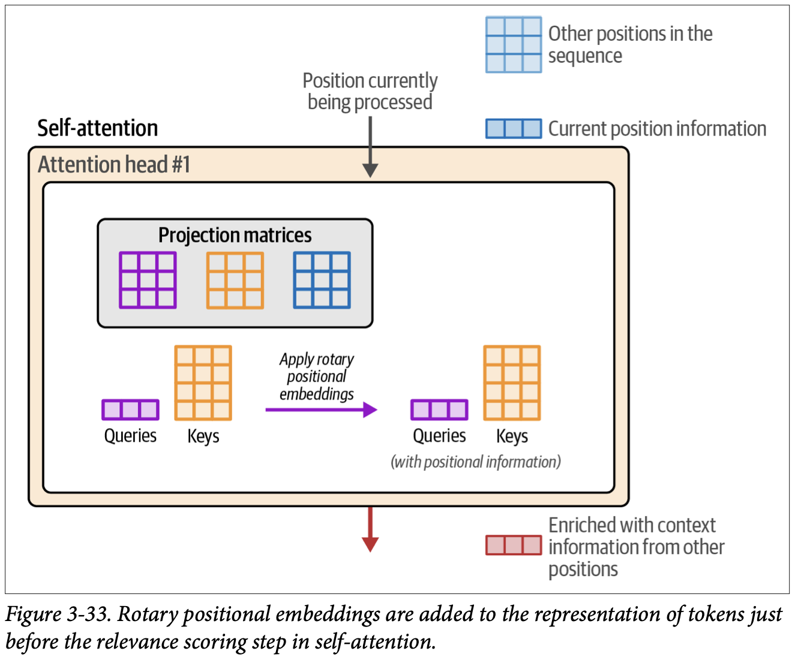
How to read this figure: left, the query (current token) and keys come out of the projection matrices. The purple arrow "Apply rotary positional embeddings" turns them into "Queries, Keys (with positional information)". Values are not in the picture: RoPE does not touch them. Scoring (plate 13) then uses the rotated Q and K.
A 2-number toy. The query sits at position m and the key at position n. RoPE rotates the query by m·θ and the key by n·θ. Move both positions by the same amount and the score stays the same: it depends only on the distance m − n.
θ = 0.3 radians per position, one rotation frequency. Real RoPE splits each head's vector into many pairs, each rotated at its own frequency. The book only says "rotating vectors in their embedding space" and "absolute and relative"; this demo shows the relative part.
Two clock hands. Each token's arrow is turned by an amount that depends on where it sits, like a clock hand moving with time. What attention compares is the angle between two hands, so "3 positions apart" looks the same at 9 a.m. or 3 p.m. Where it breaks: a clock has one hand speed; RoPE uses many speeds at once so both near and far distances can be told apart.
A rotation keeps the vector's length but changes its direction. Rotating q by mθ and k by nθ makes q·k depend on cos((m − n)θ)-like terms: the relative offset. Each token's absolute position is still in its own rotation. Because position lives in the Q·K comparison of every layer, nothing is baked into the input embedding.
"Why do modern LLMs use RoPE instead of absolute positional embeddings?" — "RoPE rotates queries and keys by a position-dependent angle right before the attention score, so the score depends on relative distance while each token still has an absolute position. It's applied in every attention layer rather than added once at the input, and it copes better with practical training setups like packed sequences. It's also the knob people adjust when extending context length."
Many tweaks of the Transformer are proposed and researched continuously. "A Survey of Transformers" highlights the main directions. Transformer architectures are also constantly adapted to domains beyond LLMs:
The same engine design ending up in cars, boats and generators. Attention is a general "mix information between parts" engine; the parts can be words, image patches, robot sensor readings or time steps. Where it breaks: each domain needs its own way to turn raw data into tokens.
"Are Transformers only for text?" — "No. Anything you can cut into a sequence of tokens works: image patches (vision Transformers), robot observations and actions (RT-X), or time-series windows. The attention + MLP block is the same; what changes is the tokenisation and the output head."
The chapter covered the main intuitions of Transformers and the recent developments behind the latest Transformer LLMs. The key concepts:
Transformers keep getting new developments and proposed tweaks for language models and other domains. Part II of the book covers practical applications of LLMs, starting with text classification in Chapter 4, which introduces applying both generative and representation models.
| Term | Meaning |
|---|---|
| Forward pass | Inputs flow through the network's computations once to produce an output; one per generated token. |
| Autoregressive model | Uses its own earlier predictions as input to make later ones (GPT-style generators; BERT is not). |
| Tokenizer / vocabulary | Turns text into token IDs from a fixed table (32,064 tokens for Phi-3). |
| Token embeddings | One learned vector per vocabulary token (3,072 numbers for Phi-3). |
| Transformer block (decoder layer) | Self-attention + feedforward network (+ residuals and normalisation); stacked 6 to 100+ times. |
| LM head | Final linear layer: model dimension → one score per vocabulary token. |
| Other heads | Sequence classification head, token classification head. |
| Decoding strategy | How one token is picked from the distribution. |
| Greedy decoding | Always pick the top token; equivalent to temperature 0. |
| Sampling | Pick tokens at random in proportion to their probabilities. |
| Context length | Max tokens (streams) the model handles at once, e.g. 4K. |
| Model dimension | Size of each stream's vector, the same in and out of every block. |
| KV cache | Stored keys and values of earlier tokens so each step computes only the new token. |
| Feedforward network (MLP) | Per-token network that does most memorisation and interpolation. |
| Self-attention | Adds relevant information from previous positions into the current token's vector. |
| Attention head | One parallel copy of attention with its own projections. |
| Query / key / value | Three projections of the inputs: query × keys → relevance; scores × values → output. |
| Softmax | Turns scores into positive weights that sum to 1. |
| Sparse / local / sliding-window attention | Attend to only some previous tokens to save compute. |
| Multi-query attention (MQA) | All heads share one keys and one values matrix. |
| Grouped-query attention (GQA) | Groups of heads share keys/values; between MHA and MQA. |
| Flash Attention | Exact attention, faster by optimising movement between GPU SRAM and HBM. |
| SRAM / HBM | GPU's small fast on-chip shared memory / large high-bandwidth memory. |
| Residual connection | Adding a sub-layer's input back to its output. |
| Pre-normalisation | Normalising before attention and feedforward, not after. |
| LayerNorm / RMSNorm | Normalisation layers; RMSNorm is simpler and more efficient. |
| ReLU / SwiGLU | Activation functions; SwiGLU is more common in newer models. |
| Absolute positional embeddings | Position 1, 2, 3 … added at the start; static (geometric) or learned. |
| Packing | Putting several short documents into one training context to avoid padding. |
| RoPE | Rotary positional embeddings: rotate Q and K in attention; absolute + relative position. |
| Name | What it does with these ideas |
|---|---|
| Hugging Face Transformers | The library used throughout: AutoTokenizer, AutoModelForCausalLM, pipeline, model.generate(use_cache=...). KV cache is on by default. |
| Microsoft Phi-3-mini-4k-instruct | The chapter's model: 32,064-token vocabulary, 3,072-dim vectors, 32 decoder layers, RMSNorm, SiLU, rotary embeddings, 4K context. |
PyTorch (torch) | Tensors and shapes like torch.Size([1, 6, 3072]); runs the model on CUDA GPUs. |
| Google Colab, T4 GPU | Where the book timed 100 tokens: 4.5 s with cache, 21.8 s without; %%timeit magic. |
| LLM APIs (e.g. OpenAI) | Stream tokens as they're generated because even a few seconds is long to wait. |
| GPT-3 | Raw language model; alternates full and sparse attention blocks. |
| GPT-4 | Chat LLM, instruction- and preference-tuned; answers "The Shawshank" with facts, not just "Redemption". |
| BERT | Representation model, not autoregressive; bidirectional attention. |
| Llama 2 / Llama 3 | Use grouped-query attention; Llama 3's block is the "2024-era" block with RMSNorm pre-norm and RoPE. |
| Sparse Transformer, Longformer | Sparse (strided/fixed) and sliding-window attention for long sequences. |
| FlashAttention / FlashAttention-2 | IO-aware exact attention kernels for GPUs (training and inference). |
| RoFormer | The model/paper that introduced rotary position embeddings. |
| Packed BERT | Sequence packing for about 2× training speed-up. |
| RT-X / Open X-Embodiment | Transformers in robotics. |
Serving engines such as vLLM, Hugging Face TGI (Text Generation Inference) and NVIDIA TensorRT-LLM are built around the KV cache (paged cache memory, continuous batching), FlashAttention kernels and GQA-aware layouts. Hosted APIs bill input and output tokens separately partly because output tokens each need a sequential forward pass.
No. Each forward pass produces one token. Software appends that token to the input and runs the model again, until a stop condition (end token or max_new_tokens).
The pipeline was set to max_new_tokens=50; generation stopped at 50 tokens. Raise the limit and it finishes the email.
Tokenizer, stack of Transformer blocks, LM head.
lm_head is Linear(3072 → 32064). What do the two numbers mean?3,072 = the model dimension (size of each token's vector); 32,064 = vocabulary size, one score per token.
Greedy: 100% of the time (it's the top token). Sampling: about 40% of the time.
lm_head_output has shape [1, 6, 32064]. What does lm_head_output[0, -1] select, and why the last position?Batch item 0, last token: the 32,064 scores for the next token. Only the last stream's output is used to predict the next token.
Their intermediate results inside each block (their keys and values) are used by the last token's attention.
use_cache=False? Give the book's numbers.Every step recomputes all earlier streams. 100 tokens on a T4: 21.8 s vs 4.5 s with cache.
Feedforward network: memorisation and interpolation. Attention: incorporating context from other positions.
(1) Relevance scoring: the current token's query × the keys matrix, then softmax so scores sum to 1. (2) Combining: multiply each value vector by its score and sum into one output vector.
Quality would degrade badly if the model could only see a few previous tokens; so it alternates full-attention and sparse-attention blocks.
MHA: 32 keys + 32 values. MQA: 1 + 1. GQA (8 groups): 8 + 8.
No, it's exact. It optimises what is loaded and moved between GPU SRAM and HBM.
Any three: normalisation before (not after) attention/FFN; RMSNorm instead of LayerNorm; SwiGLU instead of ReLU; grouped-query attention; rotary embeddings in attention instead of positional encoding added at the input.
A document packed after others would start at, say, position 50, falsely implying earlier context. RoPE mixes position into the queries and keys inside attention, just before relevance scoring, capturing absolute and relative position.
The chapter has no separate reference list; these are the works it names in the text. Years are the original publication years (beyond the book where the book gives no year).